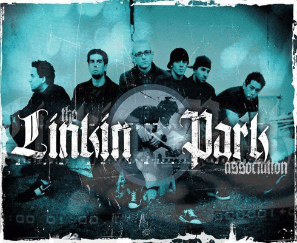

账号:
密码:



中文名：林肯公园
英文名：Linkin Park(前身为XERO,曾用Hybrid Theory)
国籍/地区：美国加州
初建年份：1996
音乐风格：New metal(新金属)、Pop-Metal（流行金属）、Hip-Hop(硬核说唱)、Post-Grunge(后车库)、Rap-Metal(说唱金属)、 Alternative Metal(另类金属)
乐团成员包括：
主唱---查斯特 贝宁顿(Chester Bennington)：拥有可以雄性般的嘶吼又拥有能轻柔低吟的女性般的歌喉，也帮其他歌手跨刀配唱；
主唱---麦克 信田(Mike Shinoda)：兼管RAP说唱、节奏、取样、吉他、键盘和音乐制作，也帮其他歌手跨刀创作，是乐团里的队长，也创立自己的Side Project 黑暗堡垒；
采样---约瑟夫 韩(Joseph Hahn)：担任团上专辑音乐MV导演，也是团上的副队长，擅长绘图，因此专辑封面由他一手包办，在团内又名〈Mr. Hahn〉/〈Joe〉；
吉他--- 布莱德 德尔森(Brad Delson) ：担任Machine Shop Recordings的A&R；
鼓手---罗伯 巴登(Rob Bourdon)：团中最年轻的队员；
贝司--- 菲尼克斯 法雷尔(Phoenix Farrell)：原名戴维
法雷尔，在团内名称「菲尼克斯」(Phoenix)，曾经初始创团的一段时间离团担任其他乐团的贝斯手等六人。
英文名：Linkin Park(前身为XERO,曾用Hybrid Theory)
国籍/地区：美国加州
初建年份：1996
音乐风格：New metal(新金属)、Pop-Metal（流行金属）、Hip-Hop(硬核说唱)、Post-Grunge(后车库)、Rap-Metal(说唱金属)、 Alternative Metal(另类金属)
乐团成员包括：
主唱---查斯特 贝宁顿(Chester Bennington)：拥有可以雄性般的嘶吼又拥有能轻柔低吟的女性般的歌喉，也帮其他歌手跨刀配唱；
主唱---麦克 信田(Mike Shinoda)：兼管RAP说唱、节奏、取样、吉他、键盘和音乐制作，也帮其他歌手跨刀创作，是乐团里的队长，也创立自己的Side Project 黑暗堡垒；
采样---约瑟夫 韩(Joseph Hahn)：担任团上专辑音乐MV导演，也是团上的副队长，擅长绘图，因此专辑封面由他一手包办，在团内又名〈Mr. Hahn〉/〈Joe〉；
吉他--- 布莱德 德尔森(Brad Delson) ：担任Machine Shop Recordings的A&R；
鼓手---罗伯 巴登(Rob Bourdon)：团中最年轻的队员；
贝司--- 菲尼克斯 法雷尔(Phoenix Farrell)：原名戴维
法雷尔，在团内名称「菲尼克斯」(Phoenix)，曾经初始创团的一段时间离团担任其他乐团的贝斯手等六人。
top 10
历史成绩
2001年全美销售总冠军，首张专辑《Hybrid Theory》全球销量一千五百万张，并得到格莱美、滚石杂志、Billboard以及MTV高度评价。
2002年同时空降英美专辑榜冠军。
2003年首支单曲《Somewhere I Belong（我的归宿）》首周便夺得全美摇滚榜冠军。
《Somewhere I Belong（我的归宿）》荣获美国Billboard榜“现代摇滚”、“主流摇滚”冠军。
全球发行首周突破400万张销售纪录。
成为德国、英国、意大利、中国港台、日本等18个国家及地区的专辑榜冠军。
第三届MTV亚洲大奖上获得“国际最受欢迎摇滚乐队”和“国际最佳音乐录影带”两项大奖。
全球累计专集销量4000万张。
Billboard 2007年度“Hot Modern Rock Songs”年终榜单，《What I've Done》位列首席、《Bleed It Out》第十三名。
Billboard 2008年度“Hot Modern Rock Songs”年终榜单，《Shadow Of The Day》第九名、《Given Up》第十名。
历史销量 48,300,000 (3张大碟《Hybrid Theory》、《Meteora》和《Minutes to Midnight》)
2001年全美销售总冠军，首张专辑《Hybrid Theory》全球销量一千五百万张，并得到格莱美、滚石杂志、Billboard以及MTV高度评价。
2002年同时空降英美专辑榜冠军。
2003年首支单曲《Somewhere I Belong（我的归宿）》首周便夺得全美摇滚榜冠军。
《Somewhere I Belong（我的归宿）》荣获美国Billboard榜“现代摇滚”、“主流摇滚”冠军。
全球发行首周突破400万张销售纪录。
成为德国、英国、意大利、中国港台、日本等18个国家及地区的专辑榜冠军。
第三届MTV亚洲大奖上获得“国际最受欢迎摇滚乐队”和“国际最佳音乐录影带”两项大奖。
全球累计专集销量4000万张。
Billboard 2007年度“Hot Modern Rock Songs”年终榜单，《What I've Done》位列首席、《Bleed It Out》第十三名。
Billboard 2008年度“Hot Modern Rock Songs”年终榜单，《Shadow Of The Day》第九名、《Given Up》第十名。
历史销量 48,300,000 (3张大碟《Hybrid Theory》、《Meteora》和《Minutes to Midnight》)
留言：